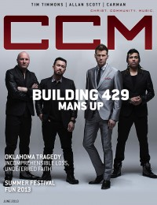

Building 429
 |
| June 2011 CCM Digital |
 |
| June 2013 CCM Digital |
| 15 October 2015 CCM Digital |
Media coverage:
- May 2004 in CCM "Ones to Watch: Under Construction", by Paul Colman, Dave Urbanski
- May 2004 in 7ball "Bands You Really, Really Should Check Out: Building 429", by Jackie A. Chapman
- Nov 2004 in CCM "Standing Room Only: In The Name of Love Tour", by Andy Argyrakis
- Jan 2005 in Christian Music Planet "Building 429 Advances To The Head of The Class", by Dave Urbanski
- Aug 2005 in CCM "5 Questions With: Jason Roy (Building 429)"
- Nov 2005 in CCM "By The Numbers: Building 429", by Gregory J Rumburg
- Mar 2006 in CCM "Mercury Rising", by John J. Thompson
- Apr 2006 in CCM "!Rock", by Andy Argyrakis
- Mar 2007 in Christian Music Planet "Studio Works: Building 429", by Andy Argyrakis
- Jun 2007 in CCM "Things I ♥: Jason Roy (Building 429)"
- Sep 2007 in New Man "Guy Gear: Rock 'n' Roll Mentors", by Chad Bonham
- Mar 2008 in CCM "Roots: Wise Encounters", by Johnston Moore
- Win 2009 in Ignite Your Faith "Entertainment: Music: Unexpected Redemption", by Todd Hertz, Rachel Groters
- Jun 2011 in CCM Digital "Listen Up: Hearing Sound in the Noise", by Andy Argyrakis
- Jan 2012 in CCM Digital "Winter Wonder Jam"
- Feb 2012 in HM "Live Report: WinterJam 2012", by Nicole Murphy
- Jun 2013 in CCM Digital "Steady Lead: Unwavering, Unshaken, Building 429 Mans Up", by Caroline Lusk
- 15 Oct 2015 in CCM Digital "The Power of a Song", by Christina Fox
Albums & reviews:
2004: Space in Between Us
2008: Building 429
2011: Listen to the Sound
- Sep 2004 in CCM, by Jessica Robin
- Nov 2004 in YouthWorker, by Dave Urbanski
- Nov 2004 in Worship Leader
- May 2004 in CCM, by Dave Urbanski
- May 2004 in CBA Marketplace, by Gary Hassig
- May 2004 in 7ball, by Amy E Hall
- Mar 2006 in HM, by Dan MacIntosh
- Mar 2006 in CCM, by David McCreary
- Mar 2006 in Worship Leader
- May 2007 in YouthWorker
- May 2007 in Worship Leader
- May 2007 in CCM, by Deborah Evans Price
- May 2007 in Relevant, by John Brandon
- Sep 2007 in Living With Teenagers, by Joy Fisher
2008: Building 429
2011: Listen to the Sound
- May 2011 in CCM Digital, by Grace S. Aspinwall
- Jun 2011 in Worship Leader, by Barry Westman
- Jun 2013 in CCM Digital, by Andy Argyrakis
- Jun 2013 in Worship Leader, by Jay Akins
- 1 Oct 2015 in CCM Digital, by Matt Conner
Award Summary (Nominations / Wins)
Dove Awards- 2005 Dove Awards
- Song: "Glory Defined"
- New Artist
- Rock/Contemporary Recorded Song: "Glory Defined"
- Rock/Contemporary Album: Space in Between Us
- Song: "Where I Belong"
- Contemporary Christian Performance: "Where I Belong"
- 2013 Grammy Awards
- Best Contemporary Christian Music Album: We Won't Be Shaken
© 2011 CMnexus. Last updated September 2019. Contact: editor -AT- cmnexus -DØT- org About